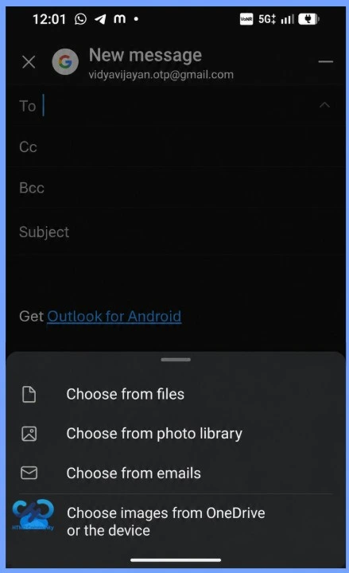
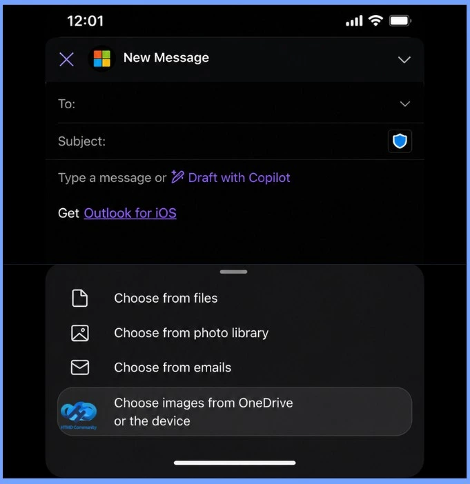
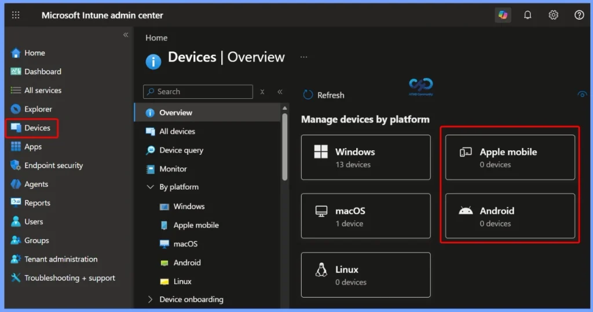

Key Takeaways
- Outlook Mobile will allow users to insert signature images directly from OneDrive.
- The enhancement applies to both Outlook for iOS and Android.
- The feature will be enabled by default, with no additional Intune or administrator configuration required.
- Current email signatures will not be modified by this update.
- The update is expected to roll out from late September through late October 2026.
Outlook for iOS and Android to Enhanced Email Signatures with OneDrive Image Support! Microsoft is enhancing the email signature experience in Outlook for iOS and Android. Starting in late September through late October 2026, users will be able to insert signature images directly from OneDrive, alongside the existing option to select images from their device.
Table of Content
Outlook for iOS and Android: Enhanced Email Signatures with OneDrive Image Support
The update makes it easier for mobile users to access approved logos and signature graphics stored in OneDrive. The feature will be enabled by default, with no administrator configuration required, while existing signatures will remain unchanged.

Key Features of OneDrive Image Support in Outlook Mobile
Outlook for iOS and Android will provide a more flexible way to add images to email signatures, while maintaining existing signature settings and organisational data-sharing controls.
| Key Features of OneDrive Image Support in Outlook Mobile |
|---|
| Users can choose signature images from OneDrive or their device. The picker displays only supported image files. Current email signatures will remain unchanged. OneDrive access continues to follow the organization’s existing data-sharing policies. The feature will be automatically available without additional setup. IT administrators do not need to enable or configure this feature. |

Additional Configuration or Administrative Action
For IT and support teams, no additional configuration or administrative action is required. The key focus is to ensure that helpdesk teams and users are aware of the updated signature workflow and know how to select images from OneDrive.
For organisations using standardised email signatures, this enhancement makes it easier for mobile users to access approved logos, branding elements, and other signature graphics stored in OneDrive.

Need Further Assistance or Have Technical Questions?
Join the LinkedIn Page and Telegram group to get the latest step-by-step guides and news updates. Join our Meetup Page to participate in User group meetings. Also, join the WhatsApp Community and the Whatsapp channel to get the latest news on Microsoft Technologies. We are there on Reddit as well.
Author
Anoop C Nair is Workplace Technology solution architect with 25+ years of experience in global enterprise organizations such as JP Morgan, Capgemini, etc. He is Microsoft Certified Trainer. Microsoft MVP from 2015 onwards for consecutive 11 years! He also conducts Intune and modern workplace tech training for enterprise organizations. He is Blogger, Speaker, and Founder of HTMD Community and HTMD Conference. His focus is on Device Management technologies such as Intune, Windows, Cloud PC. He writes about technologies like Intune, SCCM, Windows, Cloud PC, Windows, Entra, Microsoft Security.